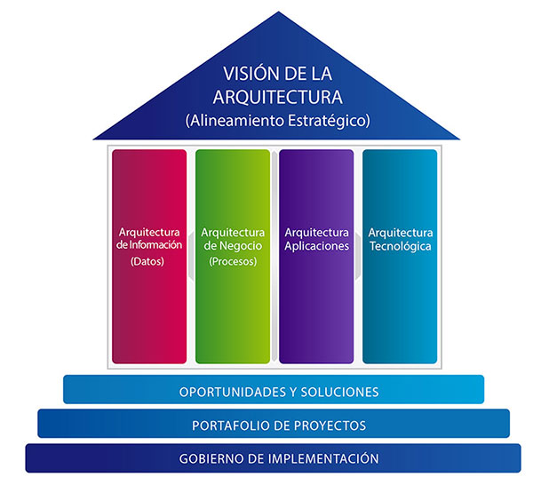

Arquitectura Empresarial.
La arquitectura empresarial es una disciplina que se enfoca en la estructura y el funcionamiento de una organización. Incluye:
Un marco de trabajo para la arquitectura empresarial es un conjunto de herramientas, metodologías, mejores prácticas y estándares que ayudan a las organizaciones a diseñar, planificar, implementar y gestionar su arquitectura empresarial.

El objetivo principal de un marco es alinear los servicios de TI con las necesidades del negocio, garantizando que la infraestructura y los recursos de TI se utilicen de manera eficiente y efectiva para brindar valor a los usuarios y clientes.
En la actualidad existen diferentes marcos donde sus disciplinas no se limitan a la producción de los catálogos, o planos del ecosistema SI/TI de la empresa, además se ocupa de planificar la arquitectura SI/TI, que dará soporte a la evolución prevista por la estrategia del negocio.
Además se ocupa de la monitorización/gobierno de los servicios actuales, la cartera de proyectos de construcción de nuevos servicios, y del acompañamiento al proceso de proyectos en curso.
Estos marcos se encargan de gobernar los costes y la complejidad de los servicios de SI/TI de la empresa.
Esta arquitectura empresarial posibilita tener una visión global de la empresa, incluyendo los procesos, la estructura organizacional y las tecnologías de la información.